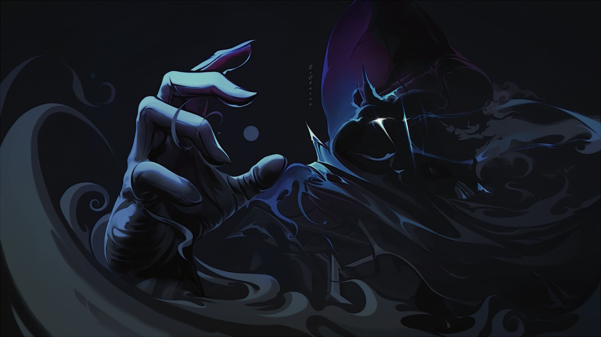
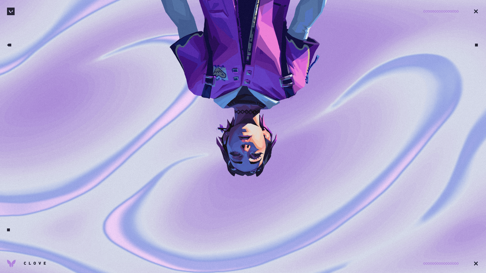

Выберите тему сайта

Sage
Бирюзово-голубые оттенки. Спокойная и чистая атмосфера.

Omen
Глубокие фиолетово-синие цвета в духе тьмы и загадочности.

Clove
Мягкие розово-фиолетовые оттенки, энергичная и позитивная атмосфера.